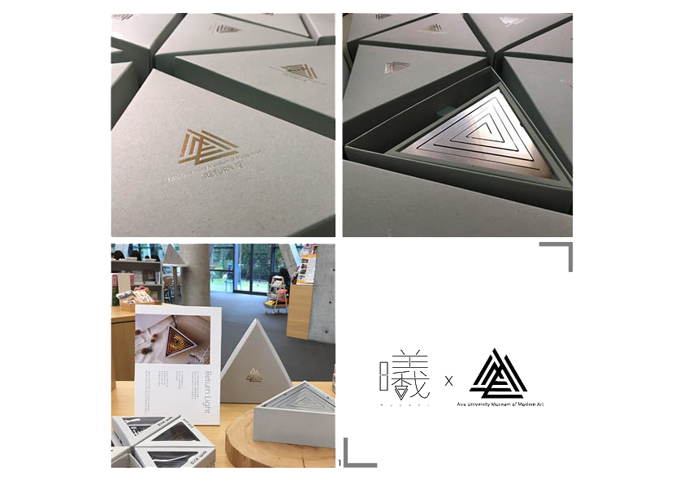

RETURN
-----cooperate with Asia University Museum of Modern Art
Project
Designer
Other
Material
souvenir of the museum
group project
on the market
fair-faced concrete, metal, acrylic sheet
Design Concept
The structures of the fair-faced concrete and extendable lamp brackets pairs up with the
shape of
a
triangle highlights the exquisiteness of the design. It also echoes with the triangle-shaped
architecture of the Asia University Museum of Modern
The logo of our product is the chinese word"shi", it's means the sunlight in the morning.The
rise
and
fall of the lamp bracket triggers a ray of warm light. Just like sunrise and sunset that
sprinkles
spontaneously in the air.
INSTRUCTION
The on-off button is in the center of the design. Unlike the traditionalon-off buttons, it adds a bit of fun to the design. The rise and fall of the lamp bracket triggers a ray of warm light. Just like sunrise and sunset that sprinkles spontaneously in the air.
Asia University Museum of Modern Art
The main structure of the Asia Museum of Modern Art of Asia University is constructed with bare concrete and curtain walls. Design by Architect Tadao Ando, the equilateral triangle is adopted as the basic element. Innumerous numbers of equilateral triangles are stacked up irregularly to form the three stories of the building.
This product has already hit the store shelves at Asia University of Modern Art.
